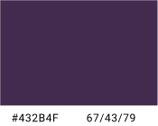
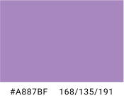
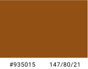
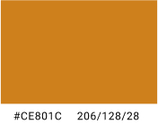
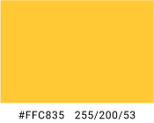
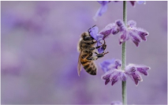
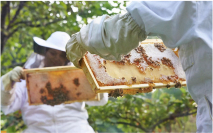
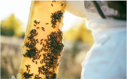
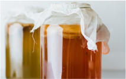

Iterating Towards a solution
After conducting a heuristic analysis, and restructuring the information architecture, we began prototyping initial wireframes for responsive web and mobile prototypes.
After mocking up an initial lo-fi prototype and getting some quick feedback, we moved forward with creating a hi-fi version. Our initial heuristic evaluation found issues with contrast and consistency, so we decided to update the color palette, imagery and logo. The decision to change the color palette was based on not only the contrast testing but the inconsistency of its use in the current design. We ultimately decided to iterate the warm tones that are reminiscent of honey and bees and add a purple that is reminiscent of flowers, and is reportedly a bee's favorite color.
Brand Colors
    Sample Images
   Iteration: Testing
We created 4 objectives to test the usability of our prototype via moderated online observations. Users were 100% successful on 3 of the 4 tasks. One unsuccessful attempt lead us to iterate our honeycomb buttons by adding explanatory text, helping to direct our users too click the icons for more info. We also conducted A/B testing to gather additional user preference data related to button size.
Solution

Whenever possible, we added interactions to make browsing and interacting with the site as user friendly and interesting as possible. We also wanted to incorporate whimsy and continue the honeycomb theme throughout.
The next steps in this project would be:
- Reconnecting with stakeholders and reviewing our design
- Obtain existing site analytics and iterate based on current use data
- Testing our prototype on active PMBA members
- Continuing prototype iteration based on feedback
- Create formal social media plan to expand internet presence
- Connecting with developers to implement design